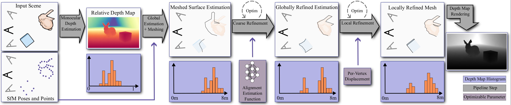

Refinement of Monocular Depth Maps
via Multi-View Differentiable Rendering
-
Laura Fink
FAU Erlangen-Nürnberg
Fraunhofer IIS -
Linus Franke
FAU Erlangen-Nürnberg
-
Joachim Keinert
Fraunhofer IIS
-
Marc Stamminger
FAU Erlangen-Nürnberg
Abstract
The accurate reconstruction of per-pixel depth for an image is vital for many tasks in computer graphics, computer vision, and robotics. In this paper, we present a novel approach to generate view consistent and detailed depth maps from a number of posed images. We leverage advances in monocular depth estimation, which generate topologically complete, but metrically inaccurate depth maps and refine them in a two-stage optimization process based on a differentiable renderer. Taking the monocular depth map as input, we first transform the map to a triangle surface mesh and scale this map to absolute distances based on structure-from-motion. We then refine this depth mesh in a local optimization, enforcing photometric and geometric consistency.
Our evaluation shows that our method is able to generate dense, detailed, high-quality depth maps, also in challenging indoor scenarios, and outperforms state-of-the-art depth reconstruction approaches.
Pipeline
Overview of our method: We employ monocular depth estimation for a relative, but topologically complete depth map. Results from Structure-from-Motion are used to scale the depth map to absolute space. Following, we convert the depth map to a surface mesh which is refined via differentiable rendering. The refinement is done in two consecutive steps: first, we learn a mapping function that smoothly aligns the depth map to the sparse point cloud and, second, we refine per-vertex positions resulting in accurate, absolute depth maps.
Coarse and Local Refinement
After the initial scale approximated from the sparse point cloud, we refine the depth map in two conscutive steps. First, we train a shallow MLP that coarsely align the initialization to the the sparse point cloud. Second, the meshed depth map is optimized on a vertex-basis to achieve multi-view consistency.Regularizers
We employ effective edge aware and Poisson blending [Perez 2003] inspired regularizers to exploit the strong initial estimates of the mono estimator.| With | Without |
Results: Comparisons on [Scannet++ 2023] Scenes.
We present qualitative comparisons against MVSFormer [Cao 2022] and MVSFormer++ [Ren 2024] which ranked 1st and 2nd place of the Tanks and Temples Point Cloud Reconstruction Benchmark [TnT 2017] at the time of writing, and also against COLMAP [Schönberger 2016].| Ours | COLMAP [Schönberger 2016] |
| Ours | MVSFormer [Cao 2022] |
| Ours | MVSFormer++ [Ren 2024] |
Citation
Acknowledgements
We would like to thank all members of the Visual Computing Lab Erlangen for the fruitful discussions.
Specifically, we appreciate Darius Rückert's support during late night debugging sessions.
The authors gratefully acknowledge the scientific support and HPC resources provided by the National High Performance Computing Center of the Friedrich-Alexander-Universität Erlangen-Nürnberg (NHR@FAU) under the project b212dc. NHR funding is provided by federal and Bavarian state authorities. NHR@FAU hardware is partially funded by the German Research Foundation (DFG) – 440719683.
Linus Franke was supported by the Bavarian Research Foundation (Bay. Forschungsstiftung) AZ-1422-20.
Joachim Keinert was supported by the Free State of Bavaria in the DSAI project.
The website template was adapted from VET, who borrowed from Zip-NeRF, who borrowed from Michaël Gharbi and Ref-NeRF. Image sliders are from BakedSDF.
References
[Schönberger 2016] Johannes Lutz Schönberger, Enliang Zheng, Marc Pollefeys, and Jan-Michael Frahm. Pixelwise view selection for un-structured multi-view stereo. In European Conference on Computer Vision (ECCV), 2016.
[Cao 2022] Chenjie Cao, Xinlin Ren, and Yanwei Fu. MVSFormer: Multi-view stereo by learning robust image features and temperature-based depth. Trans. Mach. Learn. Res., 2022.
[Ren 2024] Xinlin Ren, Chenjie Cao and Yanwei Fu. MVSFormer++: Revealing the devil in transformer’s details for multi-view stereo. In International Conference on Learning Represen- tations (ICLR), 2024
[Yeshwanth 2023] Chandan Yeshwanth, Yueh-Cheng Liu, Matthias Nießner, and Angela Dai. Scannet++: A high-fidelity dataset of 3d in- door scenes. In Proceedings of the IEEE/CVF International Conference on Computer Vision, pages 12–22, 2023.
[Knapitsch 2017] Arno Knapitsch, Jaesik Park, Qian-Yi Zhou, and Vladlen Koltun. Tanks and Temples: Benchmarking Large-Scale Scene Reconstruction. ACM Transactions on Graphics, 36 (4), 2017.
[Perez 2003] Patrick Perez, Michel Gangnet, and Andrew Blake. Poisson image editing. In ACM SIGGRAPH 2003 Papers, pages 313–318, 2003.